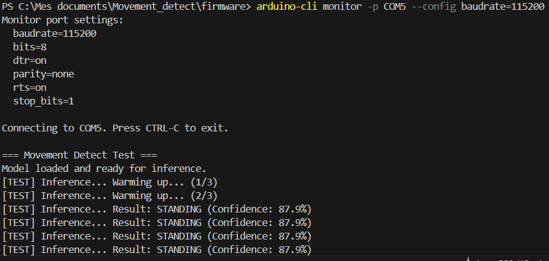

Développement d'un pipeline TinyML complet pour la reconnaissance d'activités humaines
(debout, assis, allongé...), optimisé pour tourner sur des microcontrôleurs aux ressources très limitées
(quelques kilo-octets de mémoire).
Ce projet confirme qu'avec une architecture adaptée, une quantification rigoureuse et un post-traitement
au niveau du firmware, il est possible d'obtenir des prédictions fiables en temps réel.
Le modèle repose sur un CNN 1D entraîné avec TensorFlow sur le dataset UCI HAR :
Déploiement sur ESP32 et Raspberry Pi Pico 2 W, respectant les contraintes strictes de RAM et de flash :
Aperçu de la sortie série lors de l'exécution sur un Raspberry Pi Pico 2 W :
